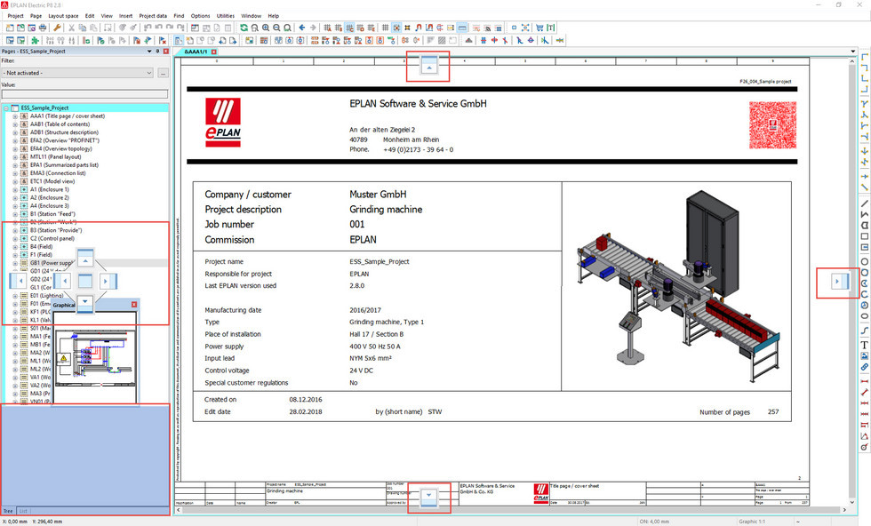

Hálózatok tervezése és szimulációja
Ismertető a tantárgyról
A tárgy Kódja: GEVEE517-B
A tárgy keretein belül lehetőség nyílik a különböző villamos eszközök berendezések megismerésére és ezek szimulációjára.
Ezen felül pedig Eplan tervezőszoftverben aló tervezést is megismerhetnek a hallgatók.

- Villamos hajtások osztályozása
- Terhelő nyomatékok matematikai leírása
- Váltakozó áramú motorok vektoros leírása
- Motorok adattáblája és katalógus adatok
- Szigetelési osztályok
- Tervezési lépések
- Eplan electric tervezőprogram
Tanszéki weblap elérhetősége:
http://www.electro.uni-miskolc.hu/